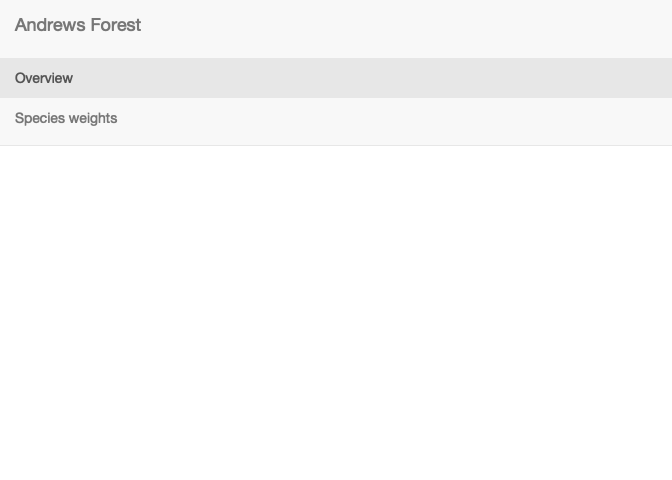
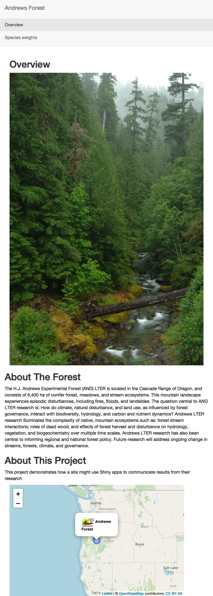
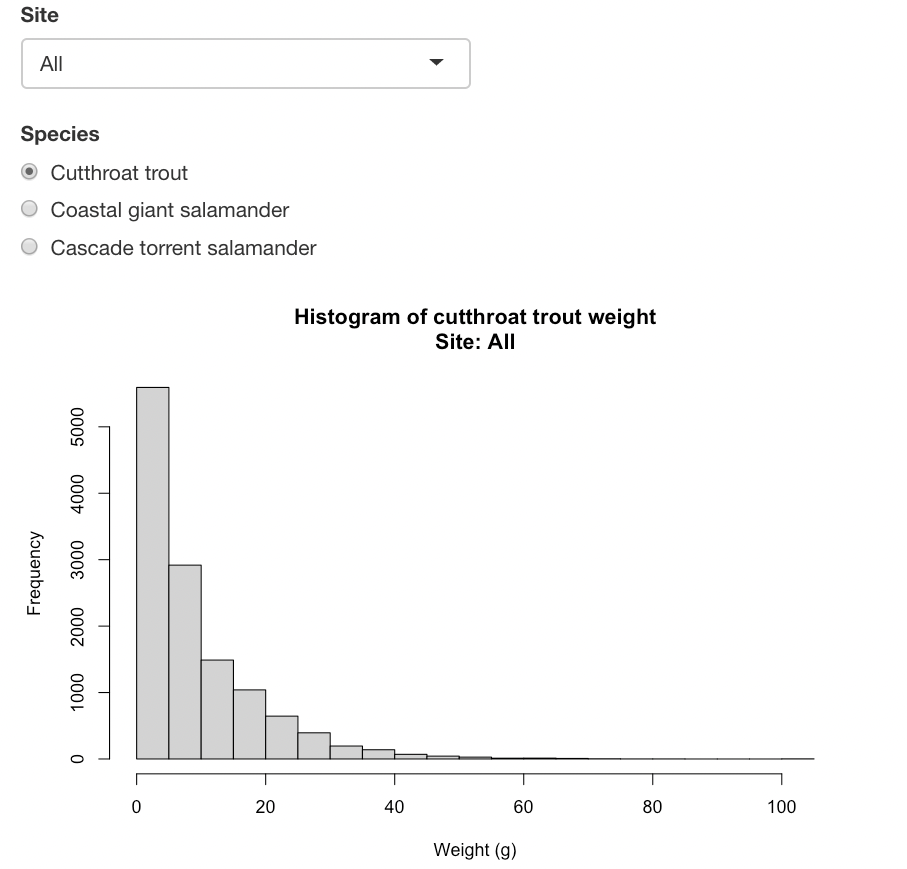

# install.packages("librarian")
librarian::shelf(shiny, htmltools, tidyverse, leaflet, lter/lterdatasampler)Build Your Own!
Creating a Reactive, Data-Driven App
Now that we’ve covered the fundamental architecture of a Shiny app, let’s tackle creating an app together during this workshop. We will work together on this app but there a few core resources you may find useful later on or if you get ahead of the group. In particular:
- We’ll use Andrews Forest data in our app so check out our description of those data in the “Example Data” tab
- If you want to learn about headers and text formatting in a Shiny app, check out the “Labels & Headers” tab
- If you’d like to experiment with Shiny’s UI built-in layout options, see the “Layouts” tab
An example of the app we will build (is found here)[https://lternetwork.shinyapps.io/asm_2022_shiny_workshop_full_app_deploy/?_ga=2.225078554.140765860.1663269972-218790057.1663269972].
In order to make sure we are all working with the same tools, be sure that you have the necessary R packages installed!
Creating an Overview Tab
Let’s say we want our app to first have an overview panel with information about the forest, a picture, and maybe the forest location. Shiny is very flexible, and there are several ways to scaffold pages, add images, etc. This is a good start!
Overview Tab - UI
There are a few prebuilt functions in shiny that build slightly different pages. In the core shiny example, we used fluidPage, which automatically sizes items on a single page. For this example, we’ll use navbarPage function in the UI, which lets us add a navigation bar with different tabs that link to separately displayed pages. We start our UI scaffolding with navbarPage, and then we can build different tabs within tabPanel functions. Let’s start with two tabs: overview, which we’ll build now, then species weights, which we’ll build in a moment.
overview_ui <- navbarPage(
# Title of the app
"Andrews Forest",
# Add the panels, with titles
tabPanel("Overview"),
tabPanel("Species weights")
)
# Nothing in the server yet...
overview_server <- function(input, output){}shinyApp(ui = overview_ui, server = overview_server)
Pretty boring app, right? Let’s fill out that Overview tab with some more interesting stuff. First, we need to create some scaffolding to hold our content. I always start with fluidPage—but this time, it’s contained within the Overview tabPanel function. I already know we want a photo on the left, then some text on the right, with a map underneath it. So, I’ll first create a fluidRow, then two columns with different widths in the row. Column widths are divisions of 12 (don’t ask me why), so 4 and 8 seem appropriate.
We can add a title using titlePanel in the main fluidPage—and Shiny already knows where to put it and how to style it. Easy!
overview_ui <- navbarPage(
"Andrews Forest",
## We're focused on this section
tabPanel("Overview",
# Start scaffolding
fluidPage(
# Add title
titlePanel("Overview"),
# Add a row to add things in
fluidRow(
# Then divide up the row into two columns, with width 4 and 8
column(4),
column(8)
)
)
),
tabPanel("Species weights",
fluidPage())
)Now to actually add some content. Images hosted online are remarkably easy—Shiny can just point to the URL and display the image, no linking files needed, with the img function from htmltools.
img(src = "https://lternet.edu/wp-content/uploads/2022/03/Lookout_Creek_in_the_HJ_Andrews_Experimental_Forest_Willamette_National_Forest_23908499686-1.jpg",
width = "100%"))We can add text and style it with other useful functions from htmltools. Let’s add two headings and some paragraph text:
htmltools::h2("About The Forest"),
htmltools::p("The H.J. Andrews Experimental Forest (AND) LTER is located in the Cascade Range of Oregon, and consists of 6,400 ha of conifer forest, meadows, and stream ecosystems. This mountain landscape experiences episodic disturbances, including fires, floods, and landslides. The question central to AND LTER research is: How do climate, natural disturbance, and land use, as influenced by forest governance, interact with biodiversity, hydrology, and carbon and nutrient dynamics? Andrews LTER research illuminates the complexity of native, mountain ecosystems such as: forest stream interactions; roles of dead wood; and effects of forest harvest and disturbance on hydrology, vegetation, and biogeochemistry over multiple time scales. Andrews LTER research has also been central to informing regional and national forest policy. Future research will address ongoing change in streams, forests, climate, and governance."),
htmltools::h2("About This Project"),
htmltools::p("This project demonstrates how a site might use Shiny apps to communicate results from their research")),When we place these in the appropriate areas, this is what we get for the UI:
Notice that we also put in a placeholder for the map using leafletOutput. We can’t build the map in the UI—that happens in the server, where all the behind the scenes code runs—but we can define a place for the output.
overview_ui <- navbarPage(
"Andrews Forest",
tabPanel("Overview",
fluidPage(
titlePanel("Overview"),
# This is the section we're focused on:
fluidRow(
column(4,
# Add image
img(src = "https://lternet.edu/wp-content/uploads/2022/03/Lookout_Creek_in_the_HJ_Andrews_Experimental_Forest_Willamette_National_Forest_23908499686-1.jpg",
width = "100%")
) # Close column
,
column(8,
# Add some text within a row — this sets us up to add a map below the text
fluidRow(
h2("About The Forest"),
p("The H.J. Andrews Experimental Forest (AND) LTER is located in the Cascade Range of Oregon, and consists of 6,400 ha of conifer forest, meadows, and stream ecosystems. This mountain landscape experiences episodic disturbances, including fires, floods, and landslides. The question central to AND LTER research is: How do climate, natural disturbance, and land use, as influenced by forest governance, interact with biodiversity, hydrology, and carbon and nutrient dynamics? Andrews LTER research illuminates the complexity of native, mountain ecosystems such as: forest stream interactions; roles of dead wood; and effects of forest harvest and disturbance on hydrology, vegetation, and biogeochemistry over multiple time scales. Andrews LTER research has also been central to informing regional and national forest policy. Future research will address ongoing change in streams, forests, climate, and governance."),
h2("About This Project"),
p("This project demonstrates how a site might use Shiny apps to communicate results from their research")
), # Close row
# And add a placeholder output where we want our map to go
leafletOutput("andrews_map", width = "90%", height = 350
)
) # Close column
)# Close fluidRow
), # Close fluidPage
), # Close Overview
tabPanel("Species weights")
) # close navbarPageOverview Tab - Server
We actually need to put something in our server: the leaflet map! Working with spatial data and or leaflet is worth a lesson on it’s own and we won’t cover it here.
One takeaway is that Shiny plays very nicely with some other R packages—such as leaflet, plotly, or ggplot—and often has specified functions designed to render these objects, such as renderLeaflet. Lets build our server:
# Define server logic required to draw a histogram
overview_server <- function(input, output) {
# Map with marker at forest
output$andrews_map <- renderLeaflet({
leaflet() %>%
addTiles() %>%
addCircleMarkers(lng = -122.1641168884823, lat = 44.2310583215366, label = "Andrews Forest") %>%
addPopups(lng = -122.1641168884823, lat = 44.2310583215366, popup = "<img src = 'https://andrewsforest.oregonstate.edu/sites/default/files/lter/images/logos/hja/newtlogo1.jpg', height = '30'> <b>Andrews Forest</b>", options = popupOptions(closeButton = FALSE)) %>%
setView(-122.1641168884823, 44.2310583215366, zoom = 5)
})
}When we run the app, we can see the layout!
shinyApp(ui = overview_ui, server = overview_server)
Creating a Reactive Histogram
Honestly, creating an overview page was nothing fancy—we just placed a few items on a page.
Shiny’s real power is letting users interact with data in real time. This is called reactivity in shiny lingo, and is the main reason most people learn and use R Shiny.
Reactive Tab - UI
Let’s begin with a user interface. Reactivity happens completely in the server, so nothing tricky here. We just place our inputs in the Shiny scaffolding. In this case, we’re adding a dropdown menu, some selectable (radio) buttons, and our plot output.
reactive_ui <- fluidPage(
# Dropdown for watershed
selectInput(inputId = "dropdown_site",
label = "Site",
# Choices are "All" or `sitecode` values in data
choices = c("All", unique(and_vertebrates$sitecode))),
# Radio buttons for species
radioButtons(inputId = "button_spp",
label = "Species",
# The `setdiff(...)` is just to remove NAs
choices = setdiff(x = unique(and_vertebrates$species), y = NA)),
# Create histogram output
plotOutput(outputId = "hist_out")
)Reactive Tab - Server
Creating the server is the tricky part. We want to take those inputs and use them to create a histogram.
Enter reactivity, and reactive objects. Reactive objects are like empty boxes: we create them once, and then can fill them with a user’s selection when the time is right. Fortunately, Shiny takes care of much of the dirty work.
Reactive objects can contain anything–a plot, text, an image, a data frame, you name it. We just define it using the reactive({}) function.
Let’s take our first example: we want an object to be the and_vertebrates data frame filtered by whatever the user selects via the radio buttons.
This looks like this:
reactive_server <- function(input, output){
# Subset dataframe to selected species
## Must be done inside of "reactive consumer"
and_v2 <- reactive({
lterdatasampler::and_vertebrates %>%
dplyr::filter(species == input$button_spp)
})
}Remember how we can refer to widget inputs using special syntax? We do that with input$button_spp in the above example to filter our data frame by our original example. input$button_spp seems like it should be a reactive object, right? Well, it kind of is—but Shiny has built in syntax that makes it intuitive to refer to.
We can add other reactivity based on the other inputs. See if you can figure out what’s going on below:
Oh, and when you want to use those reactive inputs in a plot, say? You need to refer to them in function syntax, such as and_v2. Without the tailing parentheses, Shiny won’t know what you’re referring to!
reactive_server <- function(input, output){
# Subset dataframe to selected species
and_v2 <- reactive({
lterdatasampler::and_vertebrates %>%
dplyr::filter(species == input$button_spp)
})
# Subset dataframe to desired site
## Also done in reactive consumer
and_actual <- reactive({
## If site is "All" don't subset
if(input$dropdown_site == "All"){
and_v2()
## Otherwise, subset to selected site
} else {
and_v2() %>%
dplyr::filter(sitecode == input$dropdown_site) }
})
# Assemble title from inputs to be more informative
hist_title <- reactive({
paste0("Histogram of ", tolower(input$button_spp),
" weight", "\n", "Site: ", input$dropdown_site)
})
# Create a histogram of this content
output$hist_out <- renderPlot({
## Uses the reactively-created weight
hist(x = and_actual()$weight_g,
## And the reactively-created title!
main = hist_title(),
xlab = "Weight (g)")
})
}Generate the app from the UI and server!
shinyApp(ui = reactive_ui, server = reactive_server)